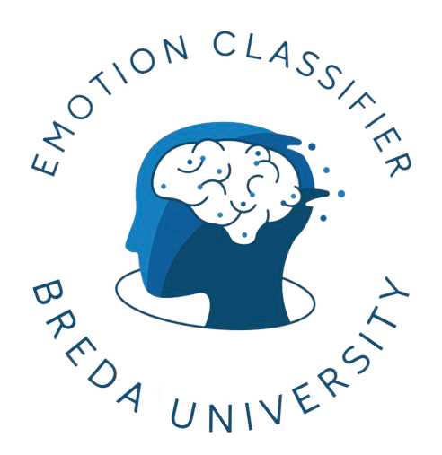

My projects
Natural Language Processing for Emotions Classification
A pipeline solution that transcribes TV episodes and labels the detected emotions.
Collaboration with Banijay Benelux
SUMMARY
The Emotion Classification Pipeline for Banijay Benelux is a sophisticated NLP solution designed
to analyze and classify emotions in TV show content. This project focused on creating
a comprehensive pipeline that converts into text and then tags the expressed emotions. By leveraging
advanced NLP techniques, the pipeline helps Banijay Benelux understand viewer engagement and emotional
responses, allowing for optimized content creation and targeted delivery.
Additionally, the project involved developing a scalable API that processes input data and returns
predictions with confidence scores. The system is designed to support automatic retraining and
continuous monitoring to ensure high accuracy over time. The deployment process includes automated
testing and versioning, with manual approval required for production releases. All code and related
assets are managed in a secure repository, ensuring efficient collaboration and traceability.
TECH
- OpenAI Whisper
- Spacy
- Transformers Models
- Tensorflow
- MLFlow
- FastAPI
- Azure ML
- Docker

Using AI in Plant phenotyping
The project leverages AI and robotics to improve plant phenotyping, setting new standards in agricultural research.
Collaboration with Netherlands Plant Eco-phenotyping Centre (NPEC)
SUMMARY
The Plant Phenotyping Project is an AI initiative aimed at enhancing plant phenotyping
through image analysis and robotic automation. This project involves two main components:
- Root Segmentation: Utilizing advanced image processing and machine learning techniques,
this component focuses on segmenting plant roots from images. By applying AI, the system
can accurately identify and delineate root structures, aiding in detailed phenotyping.
- Robot-Controlled Inoculation: This component involves the automation of plant inoculation
using a liquid handling robot. A control system is developed to ensure precise delivery
of substances to specific plant locations, enhancing the accuracy and efficiency of experimental treatments.
TECH
- Tensorflow
- Keras
- Deep learning
- OpenCV
- Reinforcement learning
- Robotics
DEMO

Fire Detection system
This project uses machine learning to detect fires in images with high accuracy.
SUMMARY
The Fire Detection System is a machine learning project designed to identify fire in images using Convolutional Neural Networks (CNN). This project includes a Jupyter notebook that details the entire workflow, from data description and model building to training, evaluation, and explainability. The CNN models are trained on a dataset of fire and non-fire images, learning to distinguish between the two with high accuracy. Additionally, the project includes a demonstration video that showcases the practical application of the model in a real-world scenario.
TECH
- Tensorflow
- Keras
- Deep learning
- CNN
- MobileNetV2
- XAI
DEMO